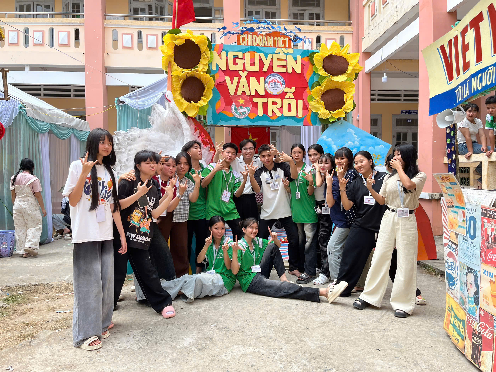
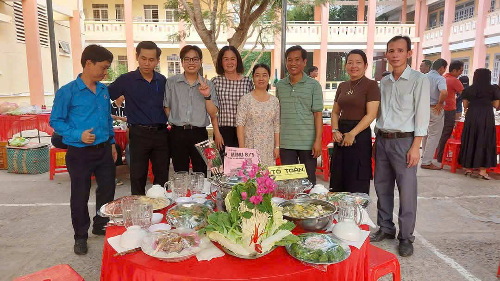
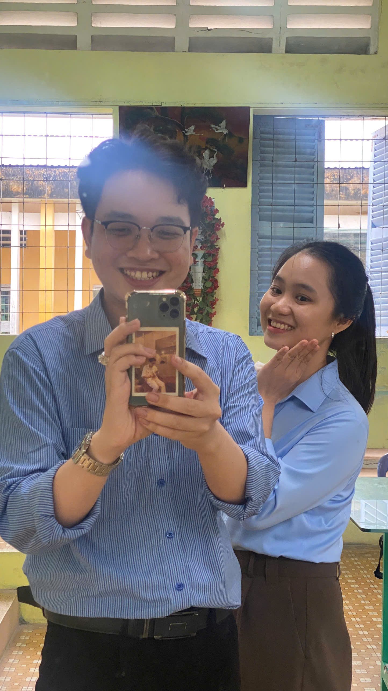
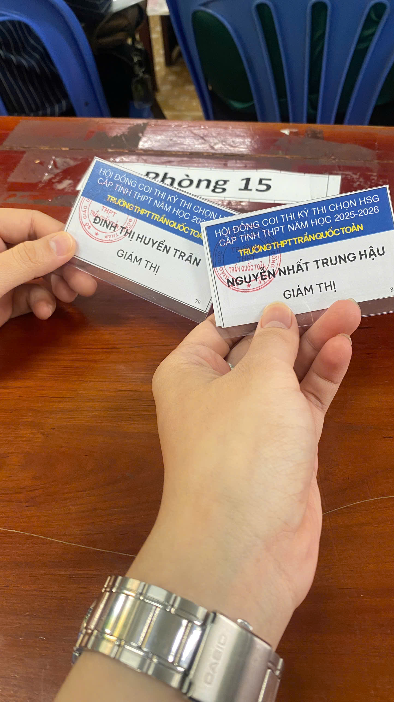
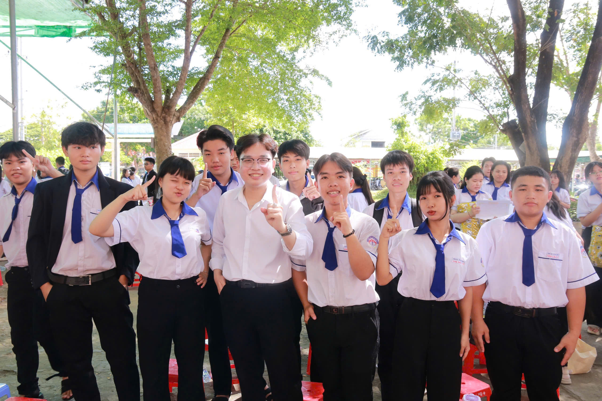

Thông tin chung
- Mục tiêu: Mong muốn phát triển theo hướng giảng dạy, nghiên cứu và ứng dụng công nghệ vào giáo dục[cite: 2].
- Chuyên môn: Giáo viên Toán – Trường THCS và THPT Phú Thành A (01/02/2025 – nay)[cite: 2, 3]. Phối hợp với học sinh và đồng nghiệp trong các hoạt động giáo dục[cite: 2].
- Điểm mạnh: Có trách nhiệm, kiên nhẫn với học sinh[cite: 2]. Làm việc nghiêm túc và đúng thời hạn[cite: 2].
Hoạt động Cụ thể

Cắm trại xuân 2026
Hòa mình cùng sức trẻ và sự năng động của các em học sinh. Tham gia các hoạt động ngoại khóa để thấu hiểu và rút ngắn khoảng cách thế hệ, từ đó tạo nên một môi trường giáo dục gần gũi và cởi mở.

Chào mừng 8/3
Những khoảnh khắc giản dị mà ấm áp, thắt chặt tình đoàn kết và gắn bó với các anh chị em đồng nghiệp trong tổ bộ môn Toán. Sự đồng lòng của tập thể là nền tảng vững chắc cho mọi hoạt động chuyên môn.


Đi gác thi
Thực hiện nhiệm vụ tại Hội đồng coi thi. Luôn đề cao tinh thần trách nhiệm, sự nghiêm túc và tính công bằng, minh bạch trong quá trình kiểm tra, đánh giá năng lực của học sinh.

Chụp với học sinh
Lưu giữ lại những nụ cười rạng rỡ và kỷ niệm đẹp khi khép lại một năm học nỗ lực không ngừng nghỉ. Đây chính là động lực to lớn nhất để tiếp tục gắn bó và cống hiến cho bục giảng.